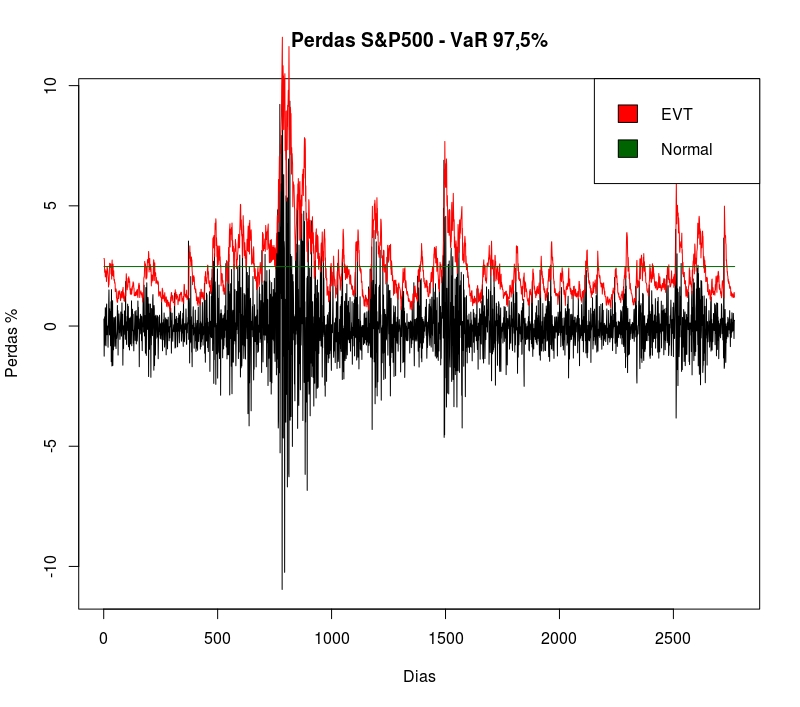

VaR é um quantil da distribuição de perdas.
\[ \begin{align*} VaR_\alpha^t=&\inf\{F_{L_{t+1}} | \mathcal{G}_t(\mathcal{L}) \geq \alpha\}, \\ ES_\alpha^t=&E[L_{t+1} | L_{t+1} > VaR_\alpha^t] \end{align*} \]
ES é o valor esperado das perdas, dado que a perda exceda o VaR.
Séries temporais de retornos possuem as seguintes características:
Ausência de autocorrelação. Componente AR é fraco.
Grande autocorrelação nos retornos absolutos ou retornos ao quadrado.
Agrupamento (Clusters) de volatilidade.
Persistência nas autocorrelações dos retornos ao quadrado.
Distribuição incondicional com caudas longas (leptocúrticas).
Distribuição condicional com algum grau de leptocurtose.
Assimetria entre ganhos e perdas.
Retornos do S&P500 de 29/01/2002 até 30/01/2009.
Modelos GARCH, Bollerslev (1986) lidam com a heteroscedasticidade condicional encontrada nas séries financeiras.
Propriedades desejáveis: leptocurtose e autocorrelação na variância
O modelo GARCH exponencial ou eGARCH de Nelson (1991) lida também com o efeito alavancagem.
\[ \begin{align*} L_t=&\mu+ \sum_{i=1}^r\phi_i L_{t-i}+ \sum\limits_{j=1}^{s}\theta_j\epsilon_{t-j} +\epsilon_t \\ \ln(\sigma_t^2)=&\omega+ \sum\limits_{i=1}^{p}(\alpha_i Z_{t-i}+ \gamma_i(|Z_{t-i}|-E|Z_{t-i}|))+ \sum\limits_{j=1}^{q}\beta_j \ln(\sigma_{t-j}^2) \\ \epsilon_t=&\sigma_t Z_t \end{align*} \]
Definição [Distribuição dos excessos]: Seja X uma variável aleatória com função de distribuição \(F \in MDA(H_\xi)\). A distribuição dos excessos sobre um limiar u tem a função de Distribuição Generalizada de Pareto - GPD:
\[ \begin{equation*} G_{\xi,\beta(u)}(X) = \begin{cases} 1- \left(1+ \frac{\xi x}{\beta(u)} \right)^{-\frac{1}{\xi}}, & \xi \neq 0,\\ 1-exp\left(-\frac{x}{\beta(u)}\right), & \xi = 0,\\ \end{cases} \end{equation*} \]
Os parâmetros \(\xi\) e \(\beta\) são conhecidos respectivamente como parâmetros de forma e escala da distribuição.
Método POT para estimar caudas de distribuições.
\[ \begin{align*} L_t=&\mu+ \phi_1 L_{t-1}+ \epsilon_t \\ \epsilon_t=&\sigma_t Z_t\\ \ln(\sigma_t^2)=&\omega+ \sum_{i=1}^{2}(\alpha_i Z_{t-i}+ \gamma_i(|Z_{t-i}|-E|Z_{t-i}|))+ \beta_1 \ln(\sigma_{t-1}^2) \\ Z_t\sim &\mathcal{D}(0,1) \text{ e } \mathcal{D} \in MDA(H_\xi) \end{align*} \]
\[ \begin{align*} VaR_\alpha^t=&\mu_{t+1}+\sigma_{t+1}z_\alpha, \\ ES_\alpha^t=&\mu_{t+1}+\sigma_{t+1}E[Z | Z>z_\alpha] \end{align*} \]
onde \(z_\alpha\) é o quantil \(\alpha\) das inovações Z.

| Modelo | Violações | Proporção |
|---|---|---|
| EVT | 69 | 2.492775 |
| Normal | 84 | 3.034682 |
Acerbi, Carlo, and Dirk Tasche. 2001. “Expected Shortfall: A Natural Coherent Alternative to Value at Risk.” Economic Notes 31 (2): 379–88. doi:10.1111/1468-0300.00091.
Bollerslev, Tim. 1986. “Generalized autoregressive conditional heteroskedasticity.” Journal of Econometrics 31 (3): 307–27. doi:10.1016/0304-4076(86)90063-1.
McNeil, Alexander J, and Rüdiger Frey. 2000. “Estimation of tail-related risk measures for heteroscedastic financial time series: an extreme value approach.” Journal of Empirical Finance 7 (3-4): 271–300. doi:10.1016/s0927-5398(00)00012-8.
Nelson, Daniel B. 1991. “Conditional Heteroskedasticity in Asset Returns: A New Approach.” Econometrica: Journal of the Econometric Society. JSTOR, 347–70.